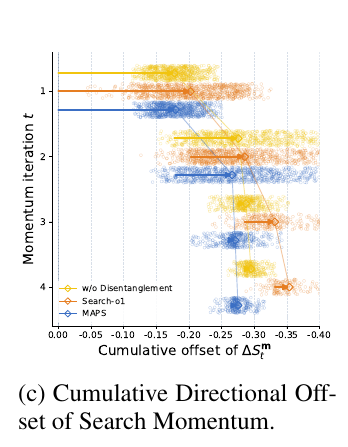

Retrieve-while-reasoning RAG methods such as Search-o1 have the LLM write the next sub-query from the full prior reasoning and sub-query history. Northeastern University and Tsinghua first measure the phenomenon: encode each sub-query as a vector, exponentially accumulate "adjacent sub-query vector differences" as "search momentum," and test whether that momentum predicts the direction of the next sub-query's drift from the original question. Prediction gets better at later steps, showing that later sub-queries tend to keep drifting along the direction earlier ones already took. MAPS therefore makes two changes: each round only passes retrieved knowledge and a compressed reasoning state to the model—never historical sub-queries or the full reasoning trace; each round first lists several complementary retrieval directions, writes one sub-query per direction, retrieves in parallel, and merges. On Qwen3-32B, MAPS mean Cover-EM (whether the gold answer appears in the response) over six QA sets is 56.0 versus 49.2 for ParallelSearch and 43.9 for Search-o1.
1. Sub-queries drift farther along existing directions
Multi-hop questions need evidence spread across documents, so models reason and emit sub-queries interleaved. The problem is that the sub-query at step t is conditioned on the entire prior trajectory; an early drift affects every later step.
The paper quantifies this with search momentum:
- Encode each sub-query as vector with E5.
- Momentum —accumulate each step's movement with weight ; larger weights history more.
- Alignment —cosine between current momentum and the next sub-query's offset from the original question.
- Fit each step's on the training set with L-BFGS-B to maximize , and report on a held-out set.
Both and rise with step count: later steps weight historical movement more, and the next sub-query's offset aligns more with existing momentum. The authors' reading: the reasoning process does not self-correct early drift.
2. Method: MAPS
2.1 Do not show the model historical sub-queries
The usual approach feeds the full trajectory (reasoning, sub-queries, retrievals) every step. MAPS keeps only two things:
- Knowledge observations: knowledge distilled from prior retrievals;
- Compressed reasoning state: a per-round updated reasoning summary that excludes historical sub-queries.
Next-round reasoning is conditioned only on the original question, knowledge observations, and the compressed state. When knowledge is enough or the max round is hit, the same three inputs produce the final answer.
2.2 Parallel directions each round
Each round has three steps by three roles:
- Propose directions: from the original question, existing knowledge, and reasoning state, list complementary retrieval directions;
- Write sub-queries: one sub-query per direction, retrieve top-K each, merge into one document set;
- Consolidate: merge evidence into this round's knowledge observation and update the compressed reasoning state.
3. Experiments
Setup. Single-hop: NQ, PopQA; multi-hop: 2WikiQA, HotpotQA, MuSiQue; reasoning: GPQA Diamond (198 questions); 1,000 random questions per set except GPQA. Backbones: Qwen3-32B and Qwen3.6-35B-A3B. Corpus: December 2018 English Wikipedia; retriever E5-base-v2 + FAISS, top-5 passages, at most 10 rounds. Metric: Cover-EM.
3.1 Main results
This checks whether MAPS beats existing RAG methods across question types and both backbones.
ParallelSearch also emits multiple sub-queries in parallel; MAPS beats it on every dataset. The authors conclude that writing more sub-queries alone is not enough—the dependence on the historical trajectory must also be cut.
3.2 Ablations
This checks each of the three components: drop "list directions first" (write parallel sub-queries directly), drop parallelism (one direction per round), drop decoupling (keep the full historical trajectory).
Removing any component lowers the mean; GPQA drops the most. Note the ablation table's MAPS GPQA 62.3 / mean 56.1 disagrees with the main table's 62.1 / 56.0; the paper does not explain. On Qwen3.6-35B-A3B, dropping decoupling only slightly trails full MAPS on 2WikiQA (64.4) and GPQA (78.1).
3.3 Is momentum actually suppressed?
This checks whether MAPS gains come from less drift. Sample 500 questions across all sets; accumulate per-round change in cosine between momentum and the original question. As rounds grow, MAPS's cumulative offset is smaller and more stable than Search-o1 and the no-decoupling variant. Another analysis measures sub-query–gold-evidence similarity: Search-o1 falls throughout; MAPS falls early then recovers and stabilizes.

3.4 Stopping rounds
MAPS stops after round 1 on 62.7% of samples, above Search-o1's 50.4% and ParallelSearch's 58.5%; the share needing 5+ rounds is also higher (14.9% vs 12.5% and 5.1%). The authors' reading: easy questions gather enough evidence earlier, while hard ones do not stop too soon.
4. Limitations
No per-question model-call counts, token cost, or latency. Each MAPS round calls direction, sub-query, and consolidate roles plus retrievals, so cost is likely above Search-o1, but how much is unknown. How is chosen and how sensitive results are is also unreported. Experiments use 2018 Wikipedia and a relatively weak E5-base-v2 retriever; whether gaps hold with stronger retrievers is untested.
5. Takeaways
Multi-hop RAG agent teams can try two low-cost changes: each round, do not feed historical sub-queries back—only distilled knowledge and a reasoning summary; before writing sub-queries, have the model list complementary directions. Ablations show removing either hurts. Measure the added call cost yourself before shipping.